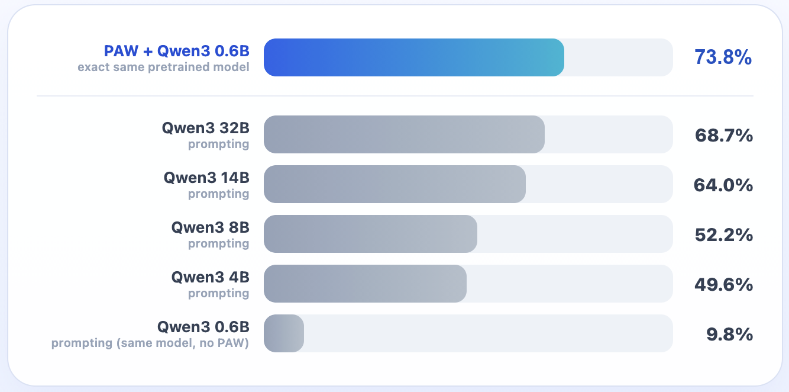
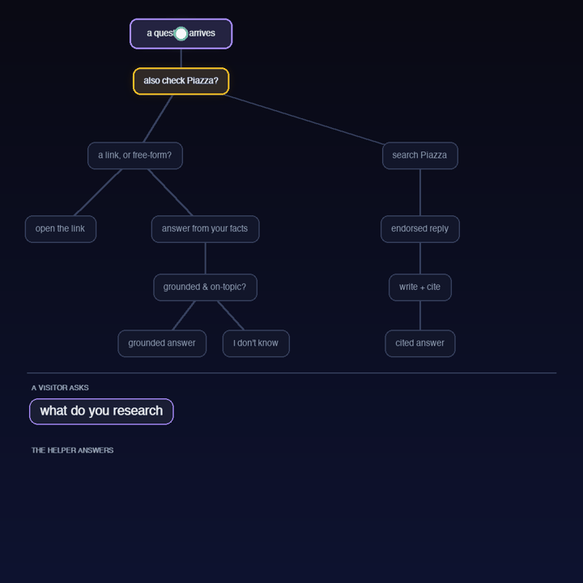
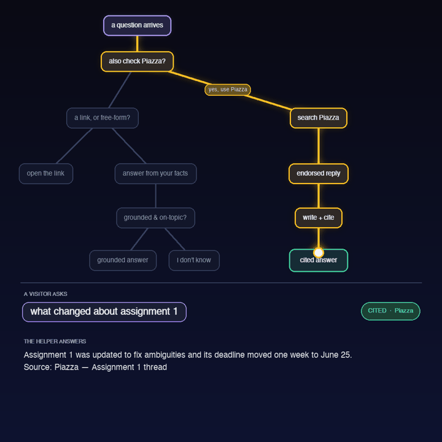
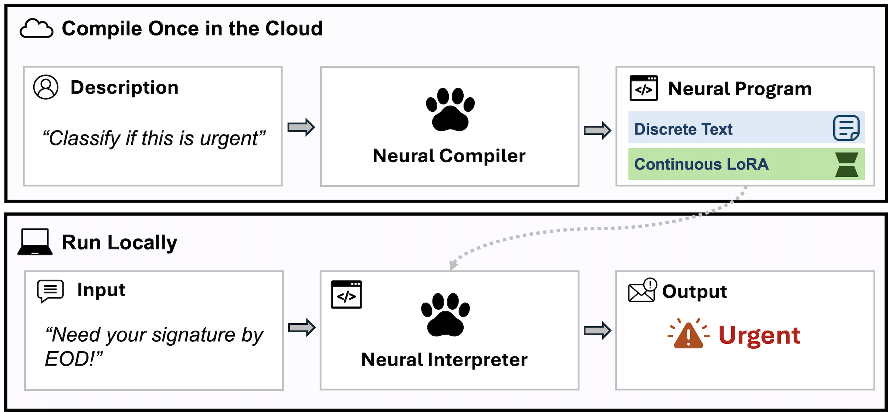

Choose among prompting, RAG, tools, and fine-tuning.
Explain how RLHF and DPO learn from preferences.
Derive the shapes and parameter savings of LoRA.
Explain how a large compiler can generate an adapter for a small model.
From L21 to L22
L21 showed how to run one fixed Qwen model.
instructionschange the prompt
knowledgeretrieve evidence
actionscall a tool
behaviorfine-tune weights
Diagnose what is missing, then choose the smallest useful lever.
Suppose we are building a CS486 course helper
studentWhen and where is the final exam?
helperSaturday, August 8, 7:30–10:00 PM in PAC 5. Source: course schedule.
The answer must be current, correct, and grounded—not merely fluent.
How should the helper answer?
1Find the relevant schedule entry.
2Place that evidence beside the question.
3Generate the answer and cite the source.
This question needs external knowledge at inference time: RAG.
The adaptation ladder
1promptchange instructions
2RAGadd knowledge
3toolsadd actions
4fine-tuningchange weights: full or LoRA
LoRA is a parameter-efficient way to fine-tune—not a separate adaptation goal.
Prompting changes context, not weights
beforeAnswer the student.
↓
afterAnswer in two sentences. Quote the date and cite the course schedule.
The prompt controls how to answer; it still does not contain the date.
Prompt templates package behavior
roleYou are a concise CS486 course assistant.
evidenceUse only supplied course context; otherwise say “I don't know.”
formatAnswer briefly and cite the source.
A reusable template standardizes behavior across questions.
A better prompt cannot invent a missing fact
When and where is the final exam?no course schedule in contextretrieve the schedule first
adaptation 1
Add current knowledge
Retrieval-augmented generation (RAG)
RAG puts evidence beside the question
questionWhen and where is the final exam?
retrieved evidenceFinal exam: Sat Aug 8, 7:30–10:00 PM, PAC 5.
grounded answerSaturday, August 8 in PAC 5. [course schedule]
RAG changes the context at inference time—not the weights.
Before questions arrive: store document embeddings
Compute once; store the vector with the original text and its source.
When a question arrives: retrieve, then answer
“Nearest” is the embedding geometry from L18.
RAG on real course factslive
Try the Assignment 3 deadline or final-exam question; inspect the two nearest chunks.
Interactive on the live slides: choose “When is Assignment 3 due?” or “When and where is the final exam?” The demo embeds the question, ranks real course chunks, and forms a grounded prompt from the best evidence.
One query benefits from two kinds of match
“Is the exam in PAC 5?”
keyword matchfinds the exact room code “PAC 5”
embedding matchconnects “exam” with “final examination”
rerankerchooses the strongest evidence
Debug RAG in two checkpoints
1Did retrieval find the right source?If not, fix documents, embeddings, or ranking.
2Is every answer claim supported?If not, fix the prompt or generation.
RAG reduces unsupported answers; it does not guarantee truth.
adaptation 2
Add actions
Some questions require computation—not more text.
Language models should not guess exact arithmetic
My scores are 82, 74, and 91 with weights 20%, 30%, and 50%. What is my weighted grade?
model alonemay produce plausible but wrong arithmetic
calculator\(0.2(82)+0.3(74)+0.5(91)=84.1\)
Let the model choose the operation; let a deterministic tool execute it.
A tool call becomes new evidence
1 · proposecalculator("0.2*82 + 0.3*74 + 0.5*91")
2 · executeThe calculator runs outside the language model.
3 · observe84.1 returns to the model.
4 · answerYour weighted grade is 84.1%.
Tool use, step by steplive
The model calls a calculator instead of guessing the arithmetic.
Interactive on the live slides: step through the weighted-grade tool loop. The model emits a calculator call, the calculator returns 84.1, and the model answers from that observation.
Agents repeat the same loop
plan
→
act
→
observe
→
stop or continue
For consequential actions, permissions and human confirmation belong around the loop.
adaptation 3
Change behavior
When the same behavior must hold across many inputs, change the weights.
A prompt can be brittle across phrasings
“When is A3 due?”“Deadline for the third assignment?”“How long do I have for Assignment 3?”
Always answer briefly, cite the evidence, and decline if evidence is missing.
Fine-tuning teaches a durable response pattern through examples.
Supervised fine-tuning learns from ideal responses
instructionWhen is Assignment 3 due?ideal responseTuesday, August 4 at 11:59 PM. [course schedule]
instructionWhich textbook is required?ideal responseI do not have supporting evidence in the supplied context.
Training still minimizes next-token loss—on curated behavior examples.
Train on examples; evaluate on new phrasings
curateinstruction → ideal response
→
trainupdate model weights
→
evaluateheld-out phrasings
warning: success on memorized wording does not imply robust behavior.
Preference data compares two answers
When and where is the final exam?
preferredAug 8, 7:30–10:00 PM in PAC 5. [schedule]
rejectedIt is probably during exam week in August.
Preferences say which answer is better without writing one perfect target token by token.
RLHF learns a separate reward model
preferenceschosen > rejected
→
reward modelgeneration → scalar score
→
policy updateincrease expected reward
Like a learned utility signal from our decision-making unit—but not literally a state-value critic.
DPO optimizes the preference directly
chosen answerraise its relative log-probability
rejected answerlower its relative log-probability
direct policy lossno standalone reward model; no PPO loop
The policy/reference log-ratio acts as an implicit reward score.
Rafailov et al., Direct Preference Optimization, NeurIPS 2023.
parameter-efficient fine-tuning
LoRA: fine-tune fewer parameters
Keep the base weights frozen; learn a compact update.
Full fine-tuning stores more than the weights
weights\(W\)
gradients\(\nabla W\)
AdamW statefirst moment \(m\)
AdamW statesecond moment \(v\)
Roughly four parameter-sized tensors before activations.
Mixed-precision training may also keep an FP32 master-weight copy.
For a square \(d\times d\) matrix, choose \(r\ll d\).
The base stays frozen; only \(A,B\) are learned
\(h = W_0x + \frac{\alpha}{r}BAx\)
full square matrix\(d^2\) trainable parameters
LoRA matrices\(dr+rd=2dr\) trainable parameters
Gradients and AdamW states are needed for \(A,B\), not \(W_0\).
\(\alpha/r\) controls the update scale.
LoRA: a low-rank updatelive
Raise \(r\) from 1 to 24: expressivity grows, but parameter savings eventually disappear.
Interactive on the live slides: compare frozen \(W_0\), \(\Delta W=BA\), and \(W'\) as heatmaps while changing \(r\) from 1 to 24. The readout reports \(2dr\) versus \(d^2\), including ranks that are no longer parameter-efficient.
One frozen base can host many adapters
frozen base modelshared weights
course-helper adapter
urgency adapter
sentiment adapter
Save and swap small task-specific \(A,B\) matrices instead of duplicating the base.
Fine-tune an urgency classifier with LoRA
1 · definelabels: immediate / wait
2 · collectmessage → label examples
3 · attachLoRA matrices \(A,B\)
4 · trainupdate only \(A,B\)
5 · evaluateheld-out messages; save adapter
Ordinary LoRA still needs a dataset and a training run for each task.
“Need your signature today” → immediate“Newsletter for next month” → wait
The live demo uses the hosted PAW Standard compiler and infer endpoint.
Compiler-generated LoRA can beat a much larger prompt

Verified FuzzyBench exact match: PAW reaches 73.8% with a frozen 0.6B interpreter, above prompting a 32B model.
Final paper result: 73.78%, rounded to 73.8%.
The course helper is a neural decision tree


Ordinary software controls the branches; PAW neural programs implement semantic branch tests and features.
Compile once; call locally like a Python function
urgency.py
import programasweights as paw
# Compile English into a local function.
fn = paw.compile_and_load(
"Classify if a message needs immediate attention or can wait"
)
# Runs locally — no internet, no API call from here on.
fn("Thesis defense moved to 3pm, need your signature today")
# Returns "immediate"
compile once build the adapterrun repeatedly use the frozen local interpreter
Semantic functions are awkward to hand-code
Count the verbs in: “I can can the can.”
can modal verbcan main verbcan noun
answer: 2
Python can express any rule—but learned programs are convenient when meaning, not spelling, determines behavior.
Program-as-Weights: compile once, run repeatedly

The generated LoRA is the reusable task specialization for a shared frozen interpreter.the shift
From AI as per-input problem solvers
↓
to AI as per-function tool builders
A large model compiles reusable specialization; a small model runs it repeatedly.